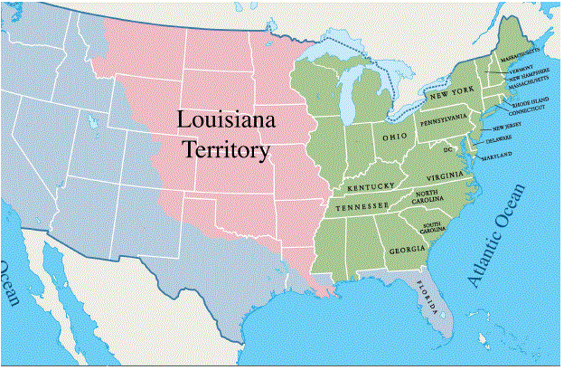
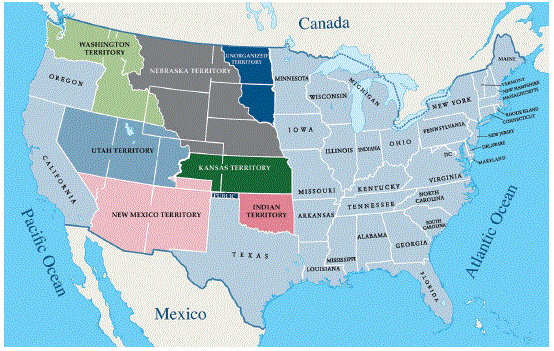
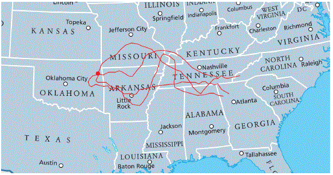

CHAPTER 9: A NEW GOVERNMENT AND AN EXPANDING NATION
CAPÍTULO 9: UN NUEVO GOBIERNO Y UNA NACIÓN EN EXPANSIÓN
UNDER DEVELOPMENT/EN DESARROLLO
[p52]
In this chapter, you will learn about:
- The Constitutional Convention.
- The conflicts caused by expansion.
- The expansion of U.S. territory from the Atlantic Ocean to the Pacific Ocean.
[p52]
En este capítulo, aprenderá sobre:
- La Convención Constitucional.
- Los conflictos causados por la expansión.
- La expansión del territorio de los Estados Unidos desde el Océano Atlántico hasta el Océano Pacífico.
THE CONSTITUTIONAL CONVENTION / LA CONVENCIÓN CONSTITUCIONAL
The Constitution was written in 1787. It was written 11 years after the Declaration of Independence was adopted in 1776.
After the United States won the American Revolutionary War, many people were not happy with the way the country was being governed. Many of the states disagreed on issues like trade, taxes, and other laws.
Some of the country's leaders like George Washington, Alexander Hamilton, and James Madison believed that the United States needed a new government.
In 1787, leaders from all the 13 original states met in Philadelphia, Pennsylvania to create a new government. This meeting was called the Constitutional Convention. The Founders wrote the Constitution at the Constitutional Convention.
After the Founders wrote the Constitution, the 13 original states had to vote for the Constitution.
Not everyone in the country wanted the new Constitution. James Madison, Alexander Hamilton, and John Jay wrote papers to support passing the U.S. Constitution. These papers are called the Federalist Papers. They published the Federalist Papers in newspapers across the United States.
[p53]
When the states voted to pass the Constitution, the United States created a new government. When the new government was created, George Washington was elected the first President of the United States. He served as President from 1789 – 1797. George Washington is also known as the "Father of Our Country".
[Photo: George Washington takes the Oath of Office at Federal Hall in New York City.]
[Photo: The Federalist Papers supported passing the U.S. Constitution.]
[Photo: The Constitution of the United States. Courtesy of the National Archives.]
La Constitución fue escrita en 1787. Fue escrita 11 años después de que la Declaración de Independencia fue adoptada en 1776.
Después de que los Estados Unidos ganaron la Guerra Revolucionaria Americana, muchas personas no estaban contentas con la forma en que se gobernaba el país. Muchos de los estados no estaban de acuerdo en temas como el comercio, los impuestos y otras leyes.
Algunos de los líderes del país como George Washington, Alexander Hamilton y James Madison creían que los Estados Unidos necesitaba un nuevo gobierno.
En 1787, líderes de los 13 estados originales se reunieron en Philadelphia, Pennsylvania para crear un nuevo gobierno. Esta reunión se llamó la Convención Constitucional. Los Fundadores escribieron la Constitución en la Convención Constitucional.
Después de que los Fundadores escribieron la Constitución, los 13 estados originales tuvieron que votar a favor de la Constitución.
No todos en el país querían la nueva Constitución. James Madison, Alexander Hamilton y John Jay escribieron documentos para apoyar la aprobación de la Constitución de los Estados Unidos. Estos documentos se llaman los Papeles Federalistas. Publicaron los Papeles Federalistas en periódicos de todo el país.
[p53]
Cuando los estados votaron para aprobar la Constitución, los Estados Unidos crearon un nuevo gobierno. Cuando se creó el nuevo gobierno, George Washington fue elegido el primer Presidente de los Estados Unidos. Sirvió como Presidente de 1789 a 1797. George Washington también es conocido como el "Padre de Nuestra Nación".
[Foto: George Washington presta juramento en Federal Hall en la ciudad de Nueva York.]
[Foto: Los Papeles Federalistas apoyaron la aprobación de la Constitución de los Estados Unidos.]
[Foto: La Constitución de los Estados Unidos. Cortesía de los Archivos Nacionales.]
THE U.S. BETWEEN 1787 – 1803 / LOS ESTADOS UNIDOS ENTRE 1787 – 1803
[p54]
When the Constitution was written in 1787, the U.S. had 13 states on the East Coast of North America. The United States also claimed to own the land between the 13 original states and the Mississippi River as U.S. territory. The word "claim" means that other European countries that created colonies in the Americas agreed that this territory was owned by the United States.
At this time, there were still over 600,000 Native Americans living on the land claimed by the United States. Native American tribes had lived for thousands of years in the territory that the U.S. claimed. They did not agree that the U.S. owned the land. This led to many conflicts and wars in the 1800s because Native Americans were forced to defend their people, their culture, and their land.
[p54]
Cuando se escribió la Constitución en 1787, los Estados Unidos tenían 13 estados en la Costa Este de América del Norte. Los Estados Unidos también reclamaban poseer la tierra entre los 13 estados originales y el Río Mississippi como territorio de los Estados Unidos. La palabra "reclamar" significa que otros países europeos que crearon colonias en las Américas acordaron que este territorio era propiedad de los Estados Unidos.
En ese momento, todavía había más de 600,000 Nativos Americanos viviendo en las tierras reclamadas por los Estados Unidos. Las tribus de Nativos Americanos habían vivido durante miles de años en el territorio que los Estados Unidos reclamaba. No estaban de acuerdo en que los Estados Unidos fuera dueño de la tierra. Esto llevó a muchos conflictos y guerras en el siglo XIX porque los Nativos Americanos se vieron obligados a defender a su pueblo, su cultura y su tierra.
THE LOUISIANA TERRITORY / EL TERRITORIO DE LOUISIANA
In 1803, the United States purchased the Louisiana Territory from France. The Louisiana Territory included a large amount of land between the Mississippi River and the Rocky Mountains. France sold the Louisiana Territory to the United States because they needed money to pay for wars they were fighting in Europe.
[Map: This map shows the U.S. in 1803 in green and the Louisiana Territory in pink.]
[p55]
When the U.S. purchased the Louisiana Territory from France, more people began moving west into the new territory. This led to more conflicts and wars between people from the United States and Native Americans.
For example, between the 1830s – 1850s, people from five Native American nations in the southern United States were forced to move from their homeland to land in the Louisiana Territory. The five Native American nations were the Cherokee, Muscogee, Seminole, Chickasaw, and Choctaw. This event is called the "Trail of Tears" because thousands of people died from disease and starvation on the trail during the journey.
Throughout the 1800s, people from the United States continued to move West. This led to more conflicts between Native Americans and people from the U.S., and more Native Americans were forced to move off their land.
Native Americans are also called American Indians. Today, there are over 500 American Indian tribes in the United States.
[Map: This map shows the U.S. in the 1850s.]
[Map: This map shows the journey that Native Americans were forced to take during the Trail of Tears.]
Some of the American Indian tribes in the United States are:
- Cherokee
- Navajo
- Sioux
- Chippewa
- Choctaw
- Pueblo
- Apache
- Iroquois
- Creek
- Blackfeet
- Seminole
- Cheyenne
- Arawak
- Shawnee
- Mohegan
- Huron
- Oneida
- Lakota
- Crow
- Teton
- Hopi
- Inuit
En 1803, los Estados Unidos compraron el Territorio de Louisiana a Francia. El Territorio de Louisiana incluía una gran cantidad de tierra entre el Río Mississippi y las Montañas Rocosas. Francia vendió el Territorio de Louisiana a los Estados Unidos porque necesitaban dinero para pagar las guerras que estaban librando en Europa.
[Mapa: Este mapa muestra los Estados Unidos en 1803 en verde y el Territorio de Louisiana en rosado.]
[p55]
Cuando los Estados Unidos compraron el Territorio de Louisiana a Francia, más personas comenzaron a moverse hacia el oeste hacia el nuevo territorio. Esto llevó a más conflictos y guerras entre personas de los Estados Unidos y los Nativos Americanos.
Por ejemplo, entre las décadas de 1830 y 1850, personas de cinco naciones de Nativos Americanos en el sur de los Estados Unidos fueron obligadas a abandonar su tierra natal para ir a tierras en el Territorio de Louisiana. Las cinco naciones de Nativos Americanos eran los Cherokee, Muscogee, Seminole, Chickasaw y Choctaw. Este evento se llama el "Camino de las Lágrimas" porque miles de personas murieron por enfermedades y hambre en el camino durante el viaje.
Durante todo el siglo XIX, las personas de los Estados Unidos continuaron moviéndose hacia el Oeste. Esto llevó a más conflictos entre los Nativos Americanos y las personas de los Estados Unidos, y más Nativos Americanos fueron obligados a abandonar sus tierras.
Los Nativos Americanos también se llaman Indios Americanos. Hoy en día, hay más de 500 tribus de Indios Americanos en los Estados Unidos.
[Mapa: Este mapa muestra los Estados Unidos en la década de 1850.]
[Mapa: Este mapa muestra el camino que los Nativos Americanos fueron obligados a tomar durante el Camino de las Lágrimas.]
Algunas de las tribus de Indios Americanos en los Estados Unidos son:
- Cherokee
- Navajo
- Sioux
- Chippewa
- Choctaw
- Pueblo
- Apache
- Iroquois
- Creek
- Blackfeet
- Seminole
- Cheyenne
- Arawak
- Shawnee
- Mohegan
- Huron
- Oneida
- Lakota
- Crow
- Teton
- Hopi
- Inuit
THE MEXICAN-AMERICAN WAR / LA GUERRA MEXICO-AMERICANA
[p56]
In 1845, Texas became the 28th state to join the United States. Until 1836, Texas was part of Mexico. Texas fought for independence from Mexico and became its own country from 1836 – 1845.
At that time, Mexico still claimed much of the land in the southwest between the Rocky Mountains and the Pacific Ocean. Mexico also wanted Texas to be part of Mexico again.
In 1846, the U.S. went to war with Mexico over Texas and other land that Mexico controlled in the southwest. This war is called the Mexican-American War.
The Mexican-American War was one war fought by the United States in the 1800s.
The U.S. won the Mexican-American War in 1848. After the war, the United States and Mexico signed a treaty. In the treaty, Mexico agreed that Texas was part of the United States. Mexico also agreed to sell the land it claimed in the southwest to the U.S. The territory the U.S. gained from Mexico later became the states of California, Nevada, and Utah. It also included territory that became parts of the states of Arizona, Colorado, New Mexico, and Wyoming.
Today, the states of California, Arizona, New Mexico, and Texas all border Mexico.
[Photo: Colonel Charles May's troops charge at the Battle of Resaca de la Palma during the Mexican-American War.]
Other wars that the United States fought in the 1800s include:
- War of 1812
- Civil War
- Spanish-American War

[Map: This map shows the United States after the Mexican-American War.]
[p56]
En 1845, Texas se convirtió en el estado número 28 en unirse a los Estados Unidos. Hasta 1836, Texas era parte de México. Texas luchó por su independencia de México y se convirtió en su propio país de 1836 a 1845.
En ese momento, México todavía reclamaba gran parte de la tierra en el suroeste entre las Montañas Rocosas y el Océano Pacífico. México también quería que Texas volviera a ser parte de México.
En 1846, los Estados Unidos fueron a la guerra con México por Texas y otras tierras que México controlaba en el suroeste. Esta guerra se llama la Guerra México-Americana.
La Guerra México-Americana fue una guerra que los Estados Unidos libró en el siglo XIX.
Los Estados Unidos ganaron la Guerra México-Americana en 1848. Después de la guerra, los Estados Unidos y México firmaron un tratado. En el tratado, México acordó que Texas era parte de los Estados Unidos. México también acordó vender las tierras que reclamaba en el suroeste a los Estados Unidos. El territorio que los Estados Unidos obtuvo de México más tarde se convirtió en los estados de California, Nevada y Utah. También incluyó territorio que se convirtió en partes de los estados de Arizona, Colorado, New Mexico y Wyoming.
Hoy en día, los estados de California, Arizona, New Mexico y Texas todos limitan con México.
[Foto: Las tropas del Coronel Charles May cargan en la Batalla de Resaca de la Palma durante la Guerra México-Americana.]
Otras guerras que los Estados Unidos libraron en el siglo XIX incluyen:
- Guerra de 1812
- Guerra Civil
- Guerra Hispano-Americana
[Mapa: Este mapa muestra los Estados Unidos después de la Guerra México-Americana.]
EXPANDING INTO THE WEST / EXPANDIÉNDOSE HACIA EL OESTE
[p57]
In 1850, California became the 31st state to join the United States, and it was the first state to join the United States that bordered the Pacific Ocean.
By 1860, there were 33 states in the United States. The Atlantic Ocean bordered the U.S. on the East Coast, and the Pacific Ocean bordered the U.S. on the West Coast. The U.S. also claimed all of the land between Canada and Mexico that today makes up the first 48 states to join the United States.
The growth of the country not only led to conflicts with Native Americans and Mexico, it also led to conflicts between people from the United States moving to the West. The biggest conflict was over slavery.
The conflicts over slavery in the South and the West were one problem that led to the Civil War.
Other answer choices for this question:
- economic reasons
- states' rights
[p57]
En 1850, California se convirtió en el estado número 31 en unirse a los Estados Unidos, y fue el primer estado en unirse a los Estados Unidos que limitaba con el Océano Pacífico.
Para 1860, había 33 estados en los Estados Unidos. El Océano Atlántico limitaba con los Estados Unidos en la Costa Este, y el Océano Pacífico limitaba con los Estados Unidos en la Costa Oeste. Los Estados Unidos también reclamaban todas las tierras entre Canadá y México que hoy conforman los primeros 48 estados en unirse a los Estados Unidos.
El crecimiento del país no solo llevó a conflictos con los Nativos Americanos y México, también llevó a conflictos entre personas de los Estados Unidos que se mudaban al Oeste. El mayor conflicto fue sobre la esclavitud.
Los conflictos sobre la esclavitud en el Sur y el Oeste fueron un problema que llevó a la Guerra Civil.
Otras opciones de respuesta para esta pregunta:
- razones económicas
- derechos de los estados